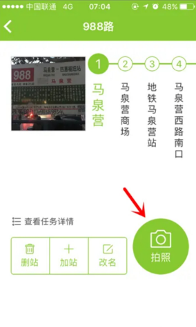
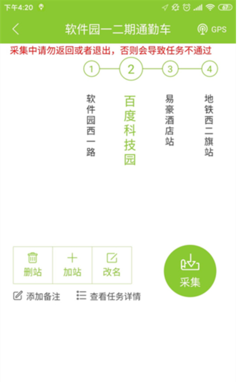
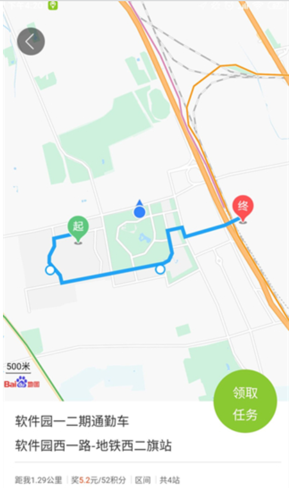
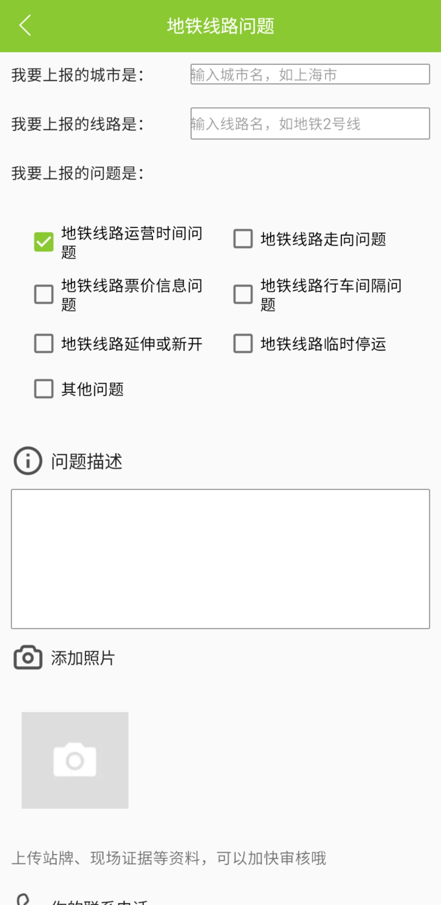
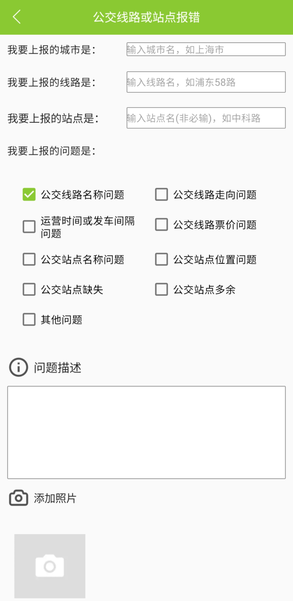

Afterward, on the collection interface, photos of the initial and final stations are taken, and waypoints are marked for collection. Additionally, operations like removing stations, adding stations, and changing names can also be performed.


After the collection is completed, users can preview their data and then upload it.
Rewards and Withdrawals
Users can earn points for approved routes and stations, and these points can be used for withdrawal to a bank account.


Users can upload information about route or station anomalies they encounter at any time.